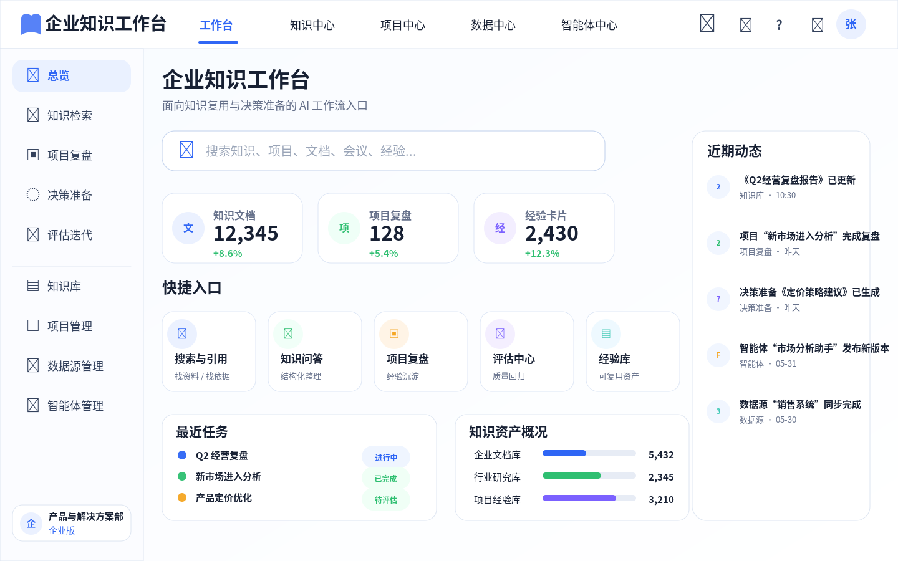
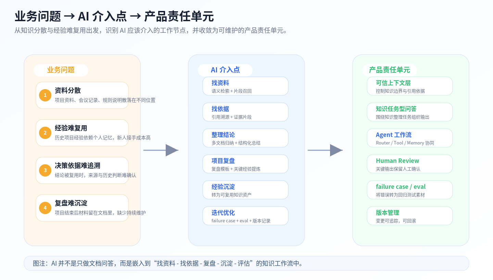
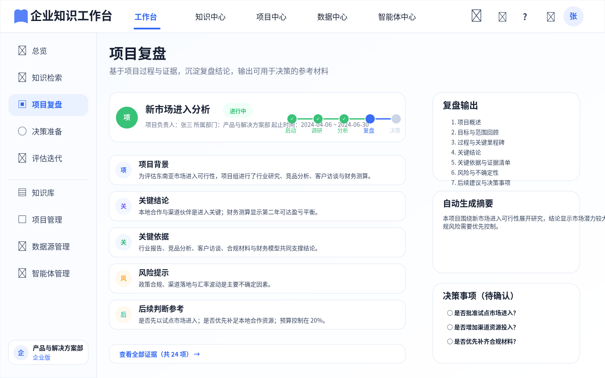
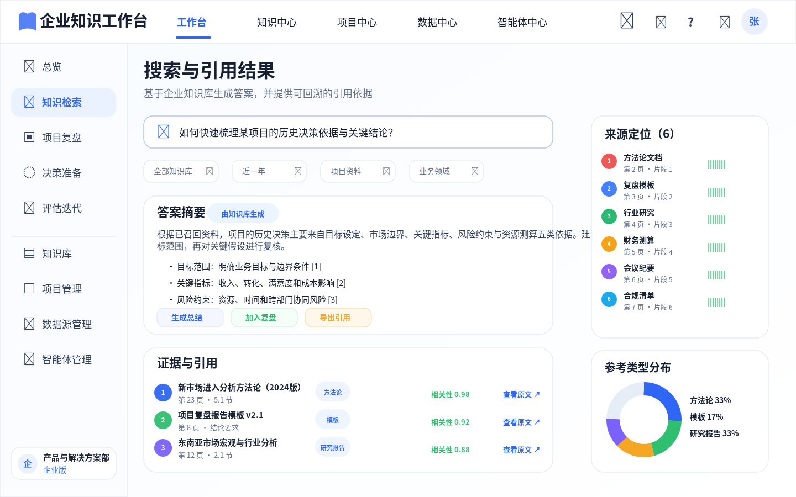
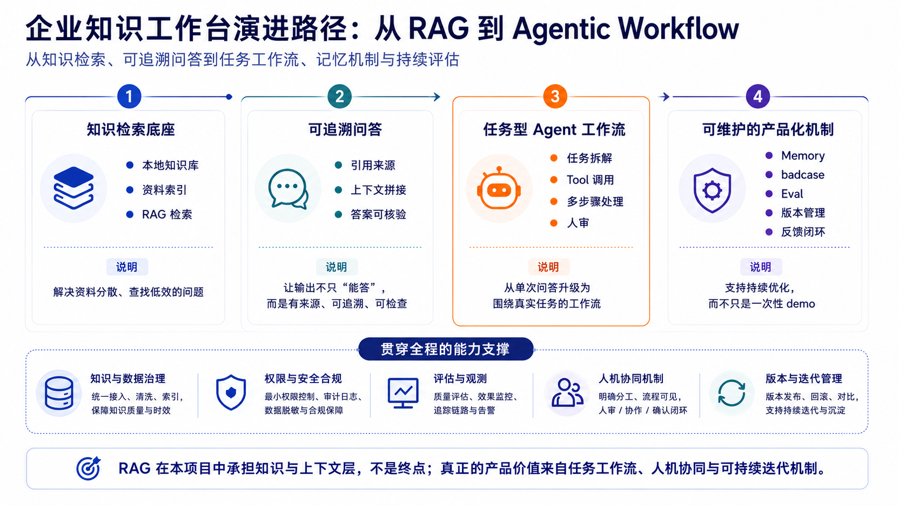
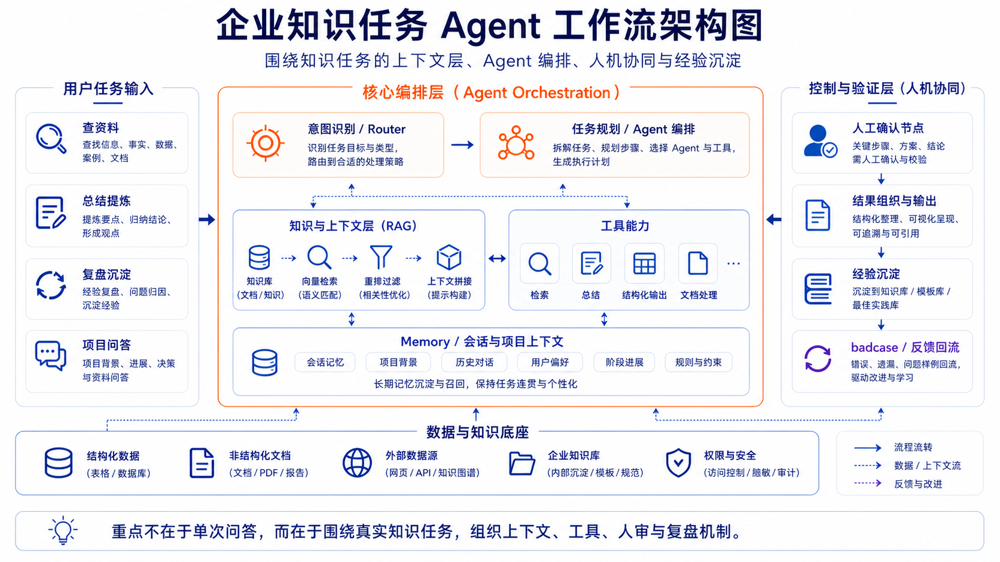
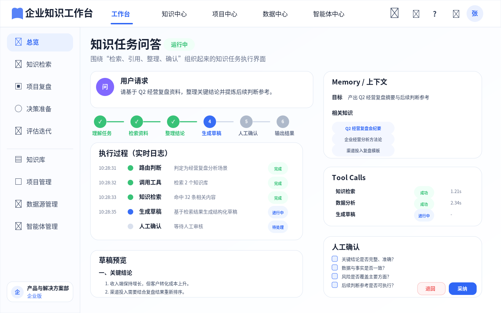
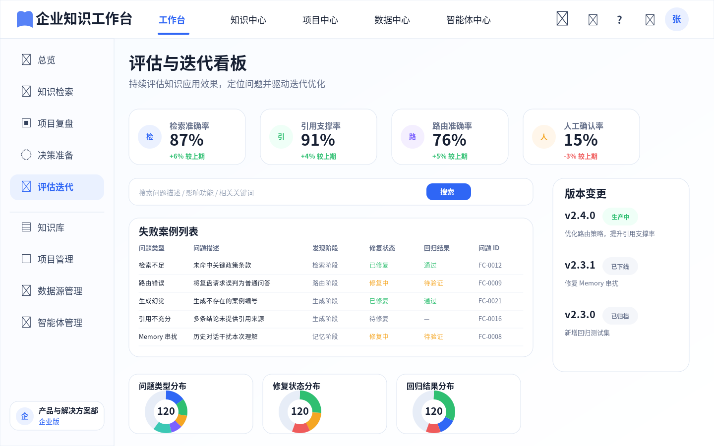

资料不在同一处
项目资料、会议记录、复盘文档和规则说明散落在不同位置。
01 · Hero / 项目概览
企业知识工作台
面向企业知识分散、历史经验难复用和决策依据难追溯的问题，将资料检索、依据追溯、项目复盘、经验沉淀和评估迭代组织为一个可验证、可追溯、可维护的 AI 知识工作台。
01.5 · Workspace Overview
模块 1 不是纯文字方案，也不是单点 RAG demo。页面先展示工作台首页形态，让读者看到知识检索、项目复盘、经验沉淀和评估入口如何被组织到同一个产品界面中。

02 · Business Problem
本项目先定义企业知识复用与决策准备场景，再判断 AI 应该进入哪些知识工作节点。
项目资料、会议记录、复盘文档和规则说明散落在不同位置。
历史项目经验依赖个人记忆，新人或跨部门接手成本高。
结论被复用时，来源、依据和历史判断难以确认。
材料留在文档里，没有进入可持续检索和迭代机制。
03 · AI Intervention
AI 不是只用于“文档问答”这一个点，而是嵌入知识工作流的多个节点：找资料、找依据、整理结论、项目复盘、经验沉淀和迭代优化。
| 工作节点 | AI 介入点 | 产品价值 |
|---|---|---|
| 找资料 | 语义检索 + 相关片段召回 | 降低查找成本 |
| 找依据 | 引用溯源 + 证据片段 | 让结论可核验 |
| 整理结论 | 多文档归纳 + 结构化总结 | 提升整理效率 |
| 项目复盘 | 复盘模板 + 关键经验提炼 | 沉淀组织记忆 |
| 迭代优化 | badcase + eval + 版本记录 | 支持持续改进 |

04 · Product Unit
找到相关资料和依据。
降低幻觉风险，支持人工核验。
从“找答案”升级为“完成知识整理任务”。
把历史资料转成结构化复盘。
保留任务上下文和当前目标。
支持质量回归和持续迭代。
保证工作流可追踪、可回滚。

05 · Product Judgment
基础模型能力增强后，很多通用问答和低风险文本生成场景确实可以直接由模型完成。但在企业知识复用与决策准备场景中，核心问题不是模型能不能生成一个看似合理的答案，而是答案是否来自指定资料、是否能追溯依据、是否能随知识更新、是否符合权限边界、是否能被人工核验。
因此，本项目中 RAG 不被表达为最终产品主角，而是被重新定位为知识与上下文中间层：它位于基础模型与企业知识资产之间，用于承接检索、引用、权限、记忆、评估和版本管理。
| 问题 | 直接调用基础模型 | 可信上下文层 |
|---|---|---|
| 企业内部资料 | 不保证覆盖最新内部资料 | 接入指定资料范围 |
| 引用与依据 | 难以稳定追溯 | 可回到原文核验 |
| 知识更新 | 依赖模型或手动上下文 | 可随资料库更新 |
| 权限边界 | 难以管理 | 可按资料范围设计 |
| 组织记忆 | 难以沉淀 | 可结合复盘、badcase 和版本记录 |

06 · Evolution
V1 / V2 / V3 的演进不是“技术架构越来越复杂”，而是企业知识工作流从可信上下文，到任务执行，再到可维护机制的产品化演进。
| 阶段 | 核心问题 | 产品判断 |
|---|---|---|
| V1：可信知识检索 | 为什么需要可信上下文层？ | 先解决资料找得到、答案有依据、结论可复核。 |
| V2：Agent 工作流 | 为什么 RAG 不够？ | 用户要完成连续知识任务，需要 Router、Tool、Memory 和 Human Review。 |
| V3：可维护 MVP | 为什么 Agent 还不够？ | 没有 eval、badcase、changelog、rollback，AI 工作流仍然只是一次性 demo。 |

07 · Agent Workflow
判断用户是在查资料、做复盘、生成总结，还是需要澄清。
将检索、总结、复盘等能力封装为可调用工具。
提供可追溯的知识依据。
保留当前项目背景和最近上下文。
组织多步骤执行链路。
在关键输出前保留人工确认。
将错误案例沉淀为下一轮迭代素材。


08 · Evaluation Loop
这个项目不是一次性 demo，而是把错误输出、路径误判和引用问题纳入回归测试与版本迭代。
| 维度 | 验证重点 |
|---|---|
| 检索层 | 正确来源是否进入召回结果。 |
| 生成层 | 回答是否基于来源，是否承认不确定。 |
| Agent 层 | Router 是否选对路径，Memory 是否串扰。 |
| 治理层 | badcase 是否进入回归测试，版本是否可追踪。 |
说明相似度不等于业务相关性，需要结合问题类型、资料范围和证据片段判断。
要求系统承认不确定，并把缺失依据暴露给人工确认。
体现 Agent 控制层风险，需要把路径选择错误纳入回归样本。
记录错误输出、误召回或路径误判。
判断问题来自检索、生成、Router 还是 Memory。
调整规则、提示词、工具路径或评估样本。
进入 eval set，防止同类问题反复出现。

09 · Boundary
| 模块 | 核心对象 | 回答的问题 |
|---|---|---|
| 模块 1：企业知识工作台 | 知识资产、历史经验、决策依据 | 企业过去积累的资料、经验和判断，如何被检索、引用、复盘和沉淀。 |
| 模块 2：AI 业务需求流转工作台 | 当前需求、问题、风险、责任链路、状态流转 | 新业务信号产生后，如何被识别、确认、分流、追踪和复盘。 |